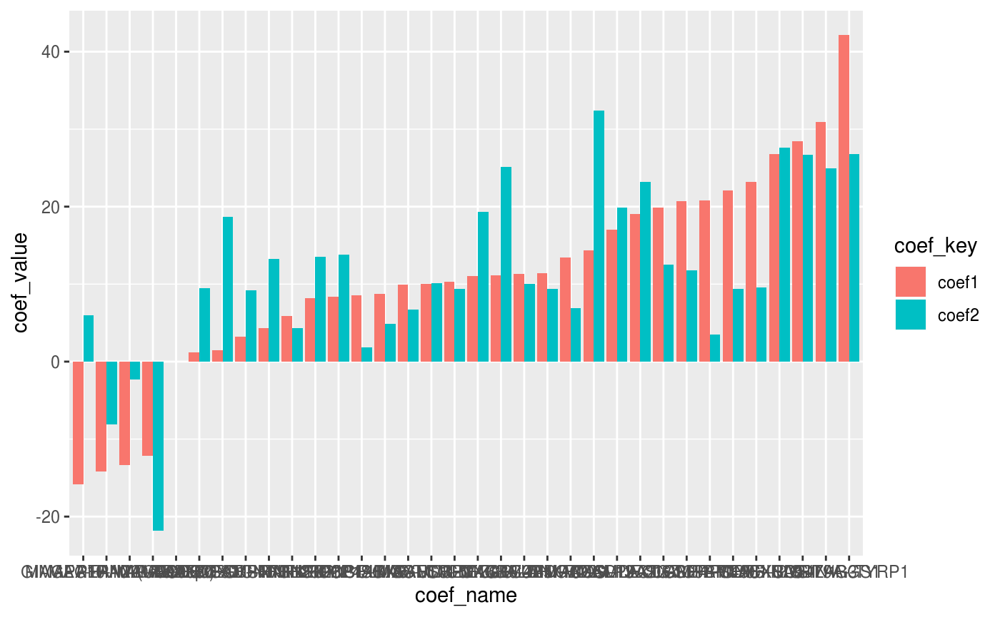

An introduction to the cpop package
Kevin Y.X. Wang
School of Mathematics and Statistics, The University of Sydney, AustraliaCPOP.RmdLoad melanoma data
library(mvtnorm)
set.seed(1234)
tcga_x = mvtnorm::rmvnorm(n = length(list_melanoma_samples$tcga),
mean = list_melanoma_means$tcga,
sigma = list_melanoma_sigma$tcga)
tcga_z = CPOP::pairwise_col_diff(tcga_x)
tcga_beta = rbeta(ncol(tcga_z), shape1 = 0.1, shape2 = 0.5)
hist(tcga_beta)
tcga_y = tcga_z %*% tcga_beta
###################################################
sweden_x = mvtnorm::rmvnorm(n = length(list_melanoma_samples$sweden),
mean = list_melanoma_means$sweden,
sigma = list_melanoma_sigma$sweden)
sweden_beta = rbeta(ncol(tcga_z), shape1 = 0.1, shape2 = 0.5)
sweden_z = CPOP::pairwise_col_diff(sweden_x)
sweden_y = sweden_z %*% sweden_beta
naive_lasso = function(x, y, family){
glmnet::cv.glmnet(x = x, y = y, family = family)
}
naive_lasso_tcga = naive_lasso(x = tcga_z, y = tcga_y, family = "gaussian")
CPOP::get_lasso_coef(naive_lasso_tcga, s = "lambda.min")## 1
## (Intercept) -1.676476e+02
## ABCA8--SERPINA5 6.966651e+00
## ABCA8--XYLT1 1.364924e+01
## ALDH1A3--RNF126P1 6.885566e+00
## ANKRD29--RNF126P1 7.899598e+00
## ANKRD29--SERPINA5 6.255377e+00
## ANKRD29--TCN1 5.991336e-01
## APOL3--KIR2DL3 5.255481e-01
## APOL3--PYHIN1 1.670109e+01
## APOL3--SAMD3 3.986091e-01
## APOL3--SAMD9L 2.004755e-01
## APOL3--SAMSN1 1.127282e+00
## APOL3--SLAMF8 7.051585e-01
## CCL19--IRX3 1.787724e+00
## CCL19--IRX6 1.165017e+00
## CCL19--MMP12 9.573040e-01
## CCL19--TYRP1 2.734379e+01
## CD19--MMP12 2.301931e-01
## CD19--PVRIG 9.149303e-01
## CD247--ICOS 5.518949e+00
## CD247--PTPN22 2.819210e-04
## CD247--PYHIN1 1.030862e+01
## CD247--ZAP70 2.884801e+01
## CD6--ICOS 1.567634e+00
## CD6--LCP1 6.747935e+00
## CD6--PTPN22 1.294825e+00
## CD79A--GPR143 3.965350e-01
## CD79A--IRX6 1.448525e-03
## CD79A--MMP12 2.595449e+00
## CD79A--SNRPD2 3.205659e+00
## CD79A--TSPAN10 4.733802e-03
## CD79A--TYRP1 2.627319e-02
## CD86--SAMSN1 5.040932e-02
## CD8A--GZMA 1.755433e+01
## CD96--HSD11B1 1.736768e+00
## CD96--KIR2DL3 5.709792e+00
## CD96--SERPINA5 6.077632e+00
## CD96--SLAMF1 1.090740e+01
## CENPB--MGST1 6.737819e-01
## CENPB--RND2 1.573138e-03
## CENPB--SNRPD2 4.848195e+00
## CILP--MAPT 5.527527e+00
## CILP--SOX2 1.469375e+00
## CILP--TTYH1 7.514096e-02
## CILP--TYRP1 1.135027e+00
## CLEC10A--FABP7 5.421262e+00
## CLEC10A--HSD11B1 4.519659e-02
## CLEC10A--RNF126P1 2.454889e-02
## CLEC10A--SERPINA5 1.597657e-02
## CLEC10A--TCN1 3.871853e-01
## CLEC10A--TMEM163 1.300990e+01
## CLEC10A--TYRP1 6.466029e-04
## COL11A1--MAGEA10 5.196838e+00
## COL11A1--MGST1 5.341022e+00
## COL4A5--MEGF10 5.630834e+00
## COL4A5--TTYH1 1.465064e+01
## CPN1--GPR143 1.008088e+01
## CPN1--MAPK4 7.860870e+00
## CXCL9--RGS1 2.649345e+01
## CXCL9--SLAMF8 1.310759e+01
## CXCR6--SAMD3 2.062905e+01
## CYP2J2--MAGEA10 5.216037e+00
## DHRS9--IRX3 1.260029e-03
## DHRS9--TYRP1 1.722271e-01
## EIF1AY--IRX3 3.252143e+00
## EIF1AY--TMEM163 1.614970e+00
## EPSTI1--IFI44L -5.165213e+00
## ERAP2--MGST1 6.413977e+00
## EVI2B--SAMSN1 4.996751e+01
## FGL2--TTYH1 5.044652e+00
## FOXD1--RND2 4.915334e+00
## GBP1--STAT1 1.974398e+00
## GBP2--SAMD9L 1.576160e-01
## GBP2--SAMSN1 6.145249e+00
## GBP2--SOX2 1.020264e+01
## GBP2--STAT1 1.350924e+00
## GBP4--KIR2DL3 3.294422e+00
## GBP5--GCH1 8.190463e+00
## GZMB--SERPINF1 2.472361e+00
## IFNG--SAMD3 9.801547e-01
## IL13RA2--MAGEA10 1.014812e+01
## IL18RAP--JSRP1 1.361248e-03
## IL18RAP--TSPAN10 2.259177e+00
## IL18RAP--ZAP70 7.566151e-03
## IL32--SLAMF8 1.775459e+01
## LYZ--RNF126P1 8.383339e+00
## LYZ--SERPINF1 1.254296e+00
## MMP12--TNFRSF17 -2.260593e+00
## PVRIG--TNFRSF17 -6.075568e+00
## TNFRSF17--TYRP1 3.038962e-02naive_lasso_tcga_pred_sweden = predict(naive_lasso_tcga, newx = sweden_z, s = "lambda.min")
plot(sweden_y, naive_lasso_tcga_pred_sweden)
abline(a = 0, b = 1, col = "red")
w = CPOP::compute_weights(tcga_z, sweden_z)
tcga_sweden_cpop = CPOP::cpop_model(z1 = tcga_z,
z2 = sweden_z,
y1 = tcga_y,
y2 = sweden_y, w = w, n_features = 100, alpha = 1, family = "gaussian")## Fitting CPOP model using alpha = 1##
## 1
## 12246## CPOP1 - Step: 01: Number of selected features: 0 out of 12246## CPOP1 - Step: 02: Number of selected features: 3 out of 12246## CPOP1 - Step: 03: Number of selected features: 13 out of 12246## CPOP1 - Step: 04: Number of selected features: 19 out of 12246## CPOP1 - Step: 05: Number of selected features: 40 out of 12246## CPOP1 - Step: 06: Number of selected features: 63 out of 12246## CPOP1 - Step: 07: Number of selected features: 77 out of 12246## CPOP1 - Step: 08: Number of selected features: 89 out of 12246## CPOP1 - Step: 09: Number of selected features: 97 out of 12246## CPOP1 - Step: 10: Number of selected features: 103 out of 12246## 100 features was reached.## A total of 103 features were selected.## 100 features was reached.## A total of 103 features were selected.## CPOP2 - Sign: Step 01: Number of leftover features: 86 out of 103## The sign matrix between the two data:##
## -1 0 1
## -1 0 0 6
## 0 0 0 0
## 1 11 0 0## CPOP2 - Sign: Step 02: Number of leftover features: 59 out of 103
## The sign matrix between the two data:##
## -1 0 1
## -1 0 0 16
## 0 0 0 0
## 1 11 0 0## CPOP2 - Sign: Step 03: Number of leftover features: 50 out of 103
## The sign matrix between the two data:##
## -1 0 1
## -1 0 0 5
## 0 0 0 0
## 1 4 0 0## CPOP2 - Sign: Step 04: Number of leftover features: 41 out of 103
## The sign matrix between the two data:##
## -1 0 1
## -1 0 0 1
## 0 0 0 0
## 1 8 0 0## CPOP2 - Sign: Step 05: Number of leftover features: 37 out of 103
## The sign matrix between the two data:##
## -1 0 1
## -1 0 0 2
## 0 0 0 0
## 1 2 0 0## CPOP2 - Sign: Step 06: Number of leftover features: 34 out of 103
## The sign matrix between the two data:##
## -1 0 1
## -1 0 0 1
## 0 0 0 0
## 1 2 0 0## CPOP2 - Sign: Step 07: Number of leftover features: 33 out of 103
## The sign matrix between the two data:##
## -1 0 1
## -1 0 0 1
## 0 0 0 0
## 1 0 0 0## CPOP2 - Sign: Step 08: Number of leftover features: 33 out of 103
## The sign matrix between the two data:##
## -1 0 1
## -1 0 0 0
## 0 0 0 0
## 1 0 0 0plot(CPOP::predict_cpop(tcga_sweden_cpop, newz = sweden_z, model_number = 1),
sweden_y)
abline(a = 0, b = 1, col = "red")

